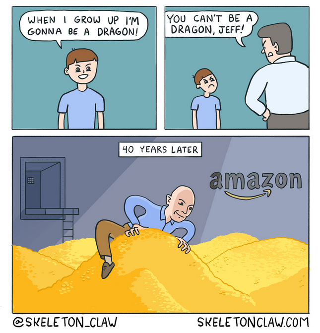
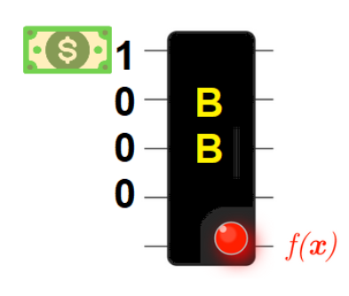
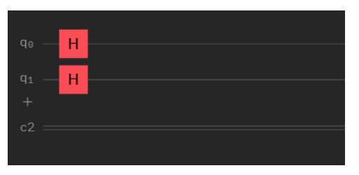
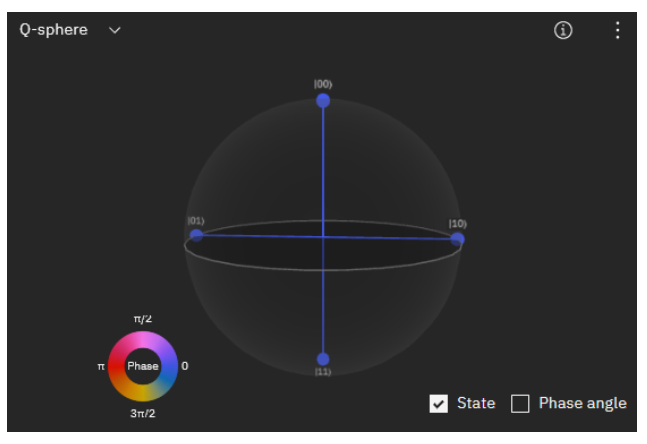
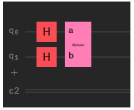
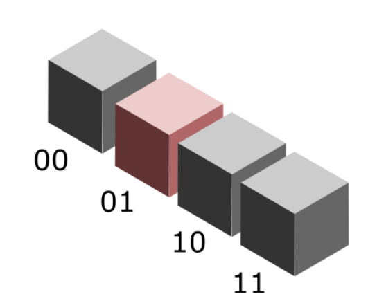
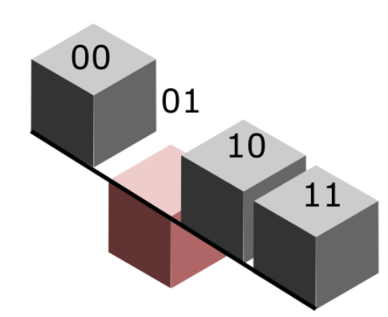
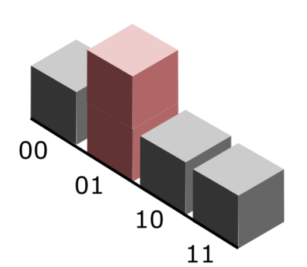
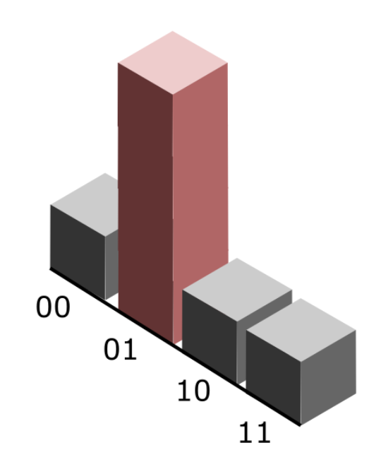

Quantum Oracles¶

¶
Let’s say you have a massive pile of cold, hard cash and you know that there is one counterfeit bill in the whole stash. Let’s say there are 50 bills total, including the counterfeit one. You have a special machine that can take one bill at a time, and emit a loud ‘beep’ if a fake bill is detected. How many bills do you have to check this way before you find the counterfeit one?
About 50.
Now let’s pretend that our bill checker is a black box. We don’t know how it identifies the counterfeit bills. All we can say is that it has an internal mathematical function that it applies to each bill, and the output, either a 0 or 1, will indicate the result of that function evaluation.In other words, we can write:
\(ƒ(x) = 1\) or \(ƒ(x) = 0\)
Let’s make the pile of bills smaller so that we can see what’s going on. Say there are 4 bills in total with one counterfeit bill. We can represent the input bills as a 4-digit binary string, with a 1 in the place of the bill that is currently being checked. The output of this operation with be a 1 if the bill is counterfeit, and a zero if it is legitimate.

For example, if the third bill is counterfeit, then we can write:
\(ƒ(1000)\) = 0
\(ƒ(0100)\) = 0
\(ƒ(0010)\) = 1
\(ƒ(0001)\) = 0
The black box will simply evaluate the function: it does not ‘know’ that correct answer internally. In quantum computing, a black box that performs a this type of function evaluation without having any knowledge of the solution is called an “oracle,” like the Oracle at Delphi (in case there are some Greek mythology lovers out there!). Oracles are very useful because there are many computational problems in which it’s difficult to find a solution, but relatively easy to verify a solution.
Let’s look at an algorithm (called Grover’s algorithm) that can act like the counterfeit bill detector shown above. Given a set of input data of size M containing a single solution to a given problem, the Grover algorithm will find the solution in \(\sqrt{N}\) iterations, compared to N iterations for the classical search case.
This becomes very important for searching extremely large data sets! In this example, we’re going to implement the Grover search quantum circuit and run it on both a quantum simulator and a real quantum computer. For simplicity’s sake, let’s keep the circuit very small (2 qubits).
Let’s say we have 4 bills, and one of them is faulty. We give each bill an index: 1, 2, 3, and 4. These indices are then represented by our qubit states.
The searching algorithm starts by initializing all the qubits to the zero state, \(\vert0\rangle\). The joint state of the 2- qubit system can be written as \(\vert 00\rangle\). This is done automatically in the IBMQ composer.
The next step is to put all the qubits into a superposition by applying an H gate to each one. Since there are two qubits in the system, there will be 4 states in the superposition:

We can actually ‘see’ this superposition on the Bloch sphere, if we build the circuit in the full Circuit Composer. The superposition states will contain all possible two-qubit states. That is, a single qubit will be either \(\vert0\rangle\) or \(\vert1\rangle\). Combined, this gives us four possible states:
\(\vert00\rangle\) (both qubits in the 0 state)
\(\vert01\rangle\) (one qubit in 0 and the other in 1)
\(\vert10\rangle\) (one qubit in 1 and the other in 0)
and
\(\vert11\rangle\) (both qubits in the 1 state).
We can see that there states all have an equal probability of being measured by takign a look at the Bloch sphere:

If we measure all the qubits in the circuit right now, what is the probability that we will get one of the four states,\(\vert01\rangle\) ?
50%
12.5%
25%
25%. We only have four choices of states. That is, the first qubit can be in state 0 or state 1, and the second qubit can be in state zero or state one. Try working out these combinations to get the possible states! We can have either \(\vert00\rangle\),\(\vert01\rangle\) ,\(\vert10\rangle\), or \(\vert11\rangle\), each with a 25% chance.
If we measure the first qubit, what is the probability that we will measure it in the \(\vert1\rangle\) state?
25%
50%
12.5%
We have two states in which the first qubit is in the \(\vert1\rangle\) state: \(\vert10\rangle\) and \(\vert11\rangle\).
Now let’s look at the second step in the circuit. We will create a ‘mystery function’ called the Grover iteration. This circuit is applied a certain number of times, and what it does in amplify the probability of measuring the state that is a solution to our problem. Since we only have 2 qubits, we only need to apply this iteration once.

Let’s represent all of our four possible solutions with 3-D blocks. These solutions are created by the Hadamard operation. The block that represents the solution state of the problem is marked in red. Initially, all of the blocks have the same height: if we measure the system, we will get one of four outcomes with equal probability.

Now, we can apply the ‘Grover Iteration’ to the blocks. This step contains, among other things, the Oracle, which will first ‘mark’ the solution by inverting the block:

Then, these blocks (representing amplitudes of the states) are passed through an amplification circuit, which will only increase the amplitude of the marked solution:

After a predetermined number of iterations, the amplitude of the solution block will far exceed those of the other states:

Now, if we measure the states, we will get a pretty high probability of measuring the correct \(\vert01\rangle\) state, which in this case represents the solution to the problem we’ve been trying to solve.
This should give you enough background that you can follow along with the code in the next part!